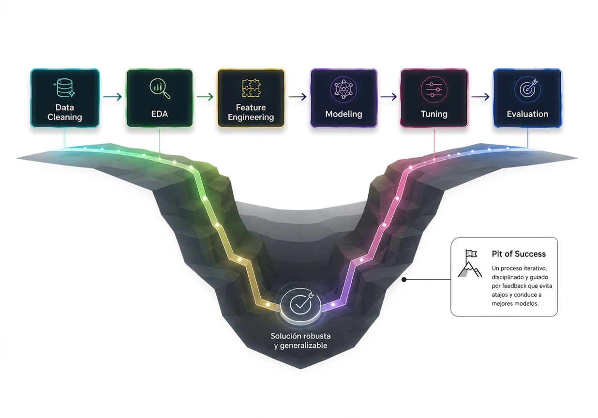
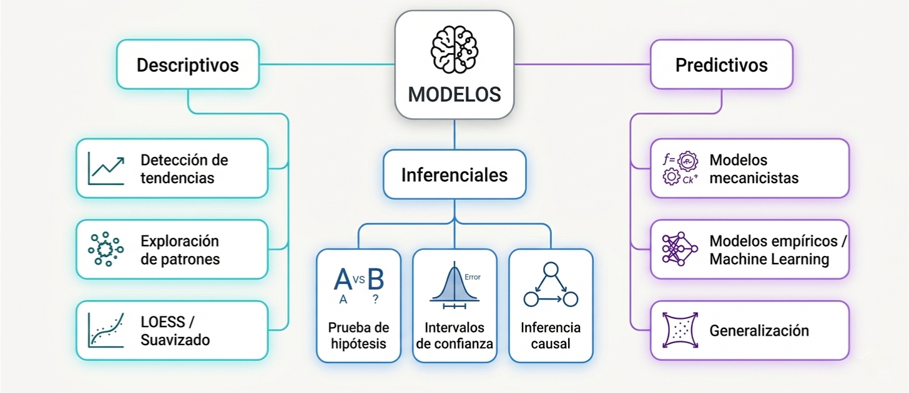
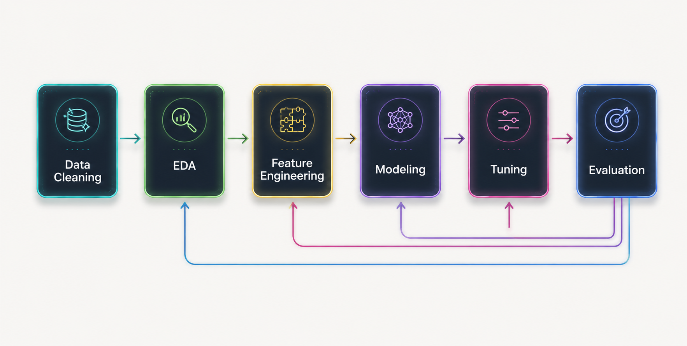
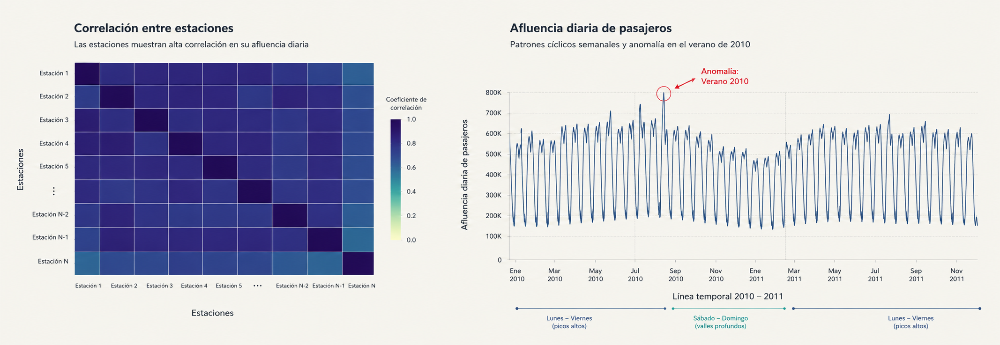
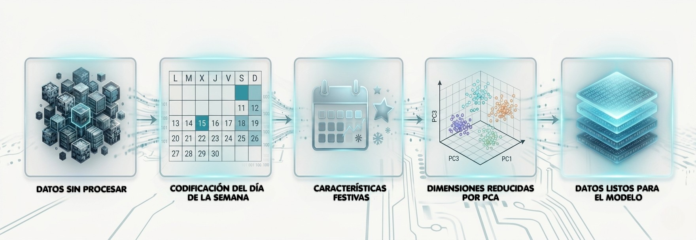
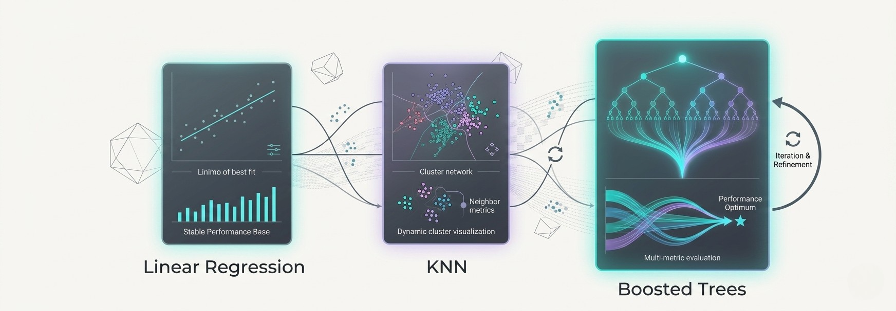
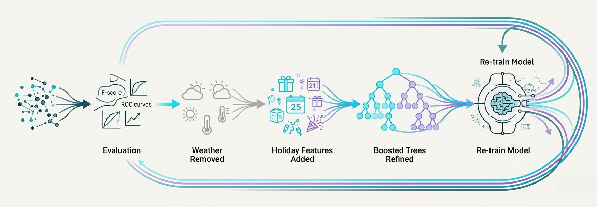
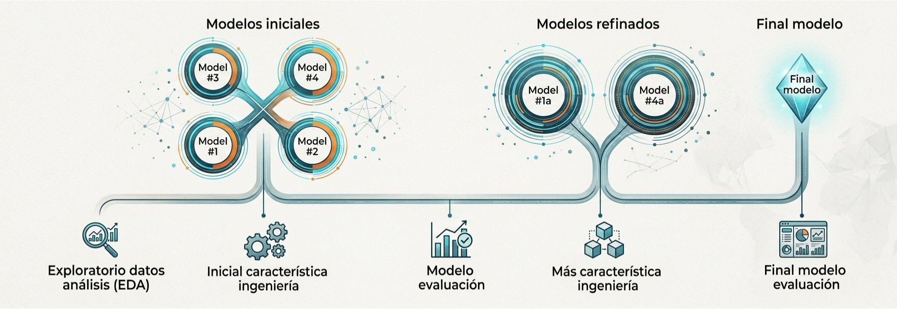

Tidy Modeling with R
Un enfoque práctico (Capítulos 1 – 4)
Modelado
¿Qué es un Modelo?
Un modelo es una representación matemática que captura la estructura esencial de un fenómeno complejo.
🔍 Capacidad reductiva
Simplificar la realidad compleja en una estructura manejable
⚖️ Sesgo–Varianza (trade-off)
Todos los modelos son incorrectos; algunos son útiles — Box (1976)
Modelos en la Vida Cotidiana
Los modelos predictivos condicionan las decisiones de miles de millones de usuarios cada día.
En todos los casos: datos estructurados + función algorítmica → predicción accionable.
Principios del Software de Modelado
Un buen software de modelado debe guiar a los analistas hacia la práctica correcta por defecto.

Los valores por defecto canalizan al analista hacia decisiones estadísticamente correctas.
El Ecosistema R

📦 Gramática consistente
Cada paquete habla el mismo lenguaje de diseño: tibbles, pipes, tidy evaluation.
🔁 Flujos reproducibles
Las recetas codifican todos los pasos de preprocesamiento; los modelos son objetos serializables.
🧩 Modular y extensible
parsnip → especificación de modelos · recipes → ingeniería de variables · yardstick → métricas
Taxonomía de Modelos
Tres objetivos principales guían todo esfuerzo de modelado.

Modelos Descriptivos
Objetivo: entender qué hay, no el porqué.
Tendencia no paramétrica sin supuestos distribucionales
Modelos Inferenciales
Objetivo: extraer conclusiones sobre una población a partir de una muestra.
| Concepto | Descripción |
|---|---|
| Hipótesis | H₀ vs Hₐ — afirmación formal sobre un parámetro |
| valor p | P(datos | H₀) — probabilidad bajo la hipótesis nula |
| IC | Rango de valores plausibles del parámetro |
| Supuestos | Normalidad, independencia, homocedasticidad |
Distribución nula con región de rechazo e intervalo de confianza
Modelos Predictivos
Objetivo: maximizar la precisión en datos nuevos y no vistos, no solo explicar las observaciones existentes.
• Los parámetros tienen significado físico
• Extrapola con mayor seguridad
• Requiere supuestos fuertes
Ejemplo: dosis-respuesta farmacocinética
• Los parámetros son latentes / opacos
• Excelente en interpolación
• Requiere muestras grandes
Ejemplo: gradient boosted trees
Ambos tipos comparten un objetivo común: la fidelidad , lograr la máxima precisión posible al predecir valores para datos nuevos.
Terminología de Modelado
Paradigma de Aprendizaje
| Supervisado | No supervisado |
|---|---|
| Variable Y conocida | Sin etiqueta de salida |
| Aprender f(X) → Y | Aprender la estructura de X |
| Regresión, Clasificación | Clustering, Reducción de dimensión |
| Evaluación con ground truth | Evaluación intrínseca |
Tipo de Tarea
| Regresión | Clasificación |
|---|---|
| Variable de salida numérica | Variable de salida categórica |
| RMSE, MAE, R² | Accuracy, AUC, F1 |
| Precios de vivienda | Detección de spam |
| ŷ continua | Probabilidad → clase |
Elegir el paradigma correcto antes de tocar los datos es la primera decisión crítica del modelado.
Pipeline de Análisis de Datos
Un flujo de trabajo riguroso protege contra las fuentes más comunes de error en el modelado.

Modelado Iterativo
El modelado nunca es lineal. Es un ciclo impulsado por retroalimentación en cada etapa.
Caso Práctico: Chicago Transit Authority
Predicción de la afluencia diaria en el sistema de trenes de Chicago.
EDA: los datos comienzan a revelar estructura
Exploratory Data Analysis sobre la afluencia de pasajeros

Feature Engineering: transformando los datos
Las observaciones del EDA redefinen las variables del modelo

Modelado y ajuste iterativo
Comparación, optimización y evaluación de múltiples enfoques predictivos

Evaluación y retroalimentación del modelo
La evaluación redefine variables, descarta enfoques y reinicia el ciclo de modelado

El modelo es el resultado del proceso
La calidad predictiva emerge de la iteración, evaluación y refinamiento continuo

Conclusiones
🔄 El modelado constituye un ciclo heurístico e iterativo
Las fases de análisis exploratorio (EDA), ingeniería de funciones y evaluación se retroalimentan constantemente. Este proceso no es una secuencia lineal, sino un camino para ganar entendimiento profundo de los datos.
🧰 El software promueve el foso del éxito
Un diseño robusto guía al investigador hacia buenas prácticas científicas por defecto. Las herramientas adecuadas garantizan la reproducibilidad y protegen al usuario de cometer errores metodológicos latentes.
🤝 La estadística y el machine learning son enfoques complementarios
El rigor de las conclusiones inferenciales debe estar respaldado por la fidelidad predictiva del modelo. Un modelo con significancia estadística pero baja precisión sobre datos nuevos resulta altamente sospechoso.
Max Kuhn & Julia Silge (2022). Tidy Modeling with R. O'Reilly.
Primer